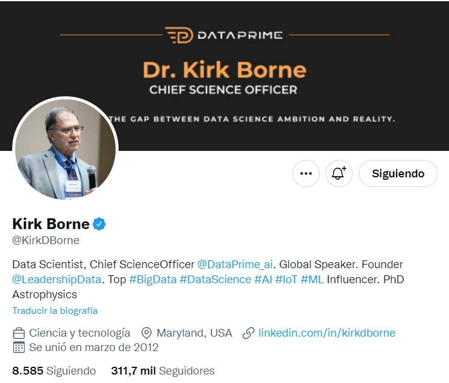

Captura de cuenta

Cuenta de Twitter
Tweets by KirkDBorneComentario del Grupo
Elegimos esta cuenta considerando la posición de influecer que denota la persona de la cuenta en calidad de profesional de la tecnología. Porque estamos de acuerdo en que es interesante consumir contenido de influencers que tengan el nivel académico del dueño de esta cuenta y aprender, o por lo menos despertar curiosidad sobre temas de inteligencia artificial, big data, entre otros temas relacionados a nuevas tecnologías.